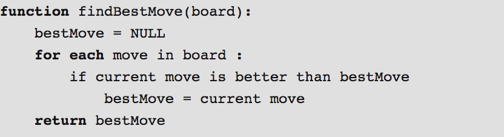
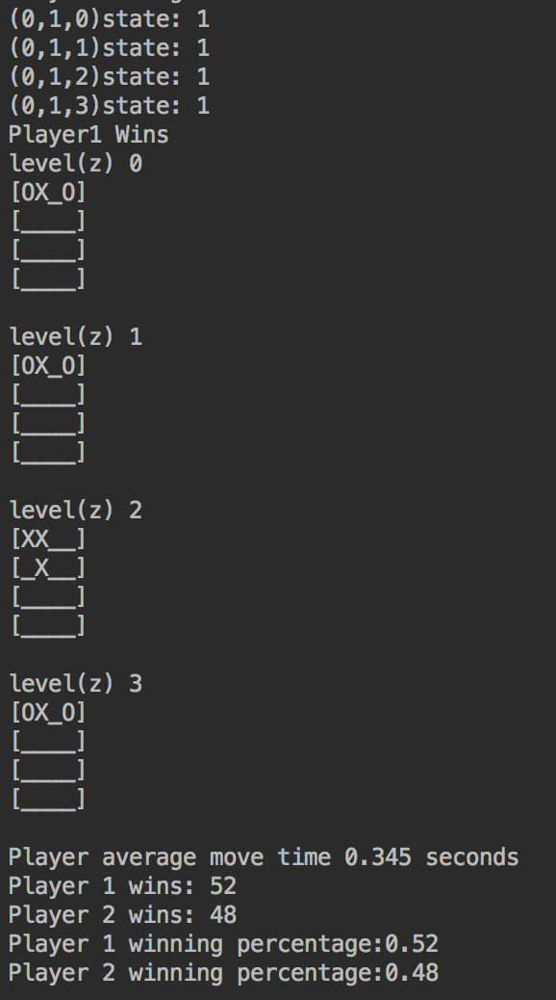
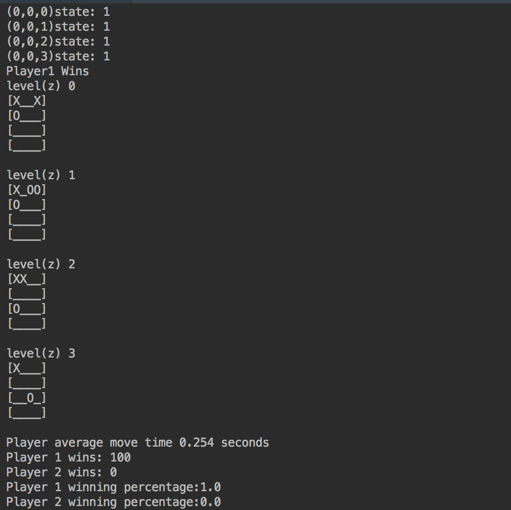
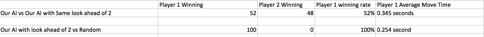
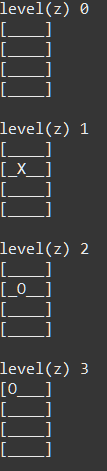
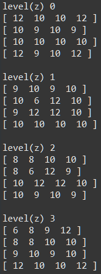
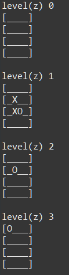
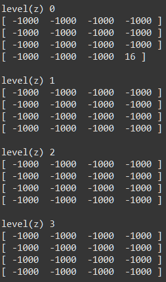

Problem Definition
Given some skeleton code that had an implementation of playing a 3D 4 x 4 x 4 Tic-Tac-Toe game, we needed to create an AI algorithm that could reliably play and beat an opponent using the minmax method, alpha-beta pruning, and our own heuristic value calculations. This way, the AI would be able to look ahead and calculate the best move to make, supposedly avoiding any possible losses. This experiment is important as it teaches us how to properly approach the concepts of developing the rules for an AI when tasked with making something approachable, which is a skill we will need the further we actually delve into Artificial Intelligence.
The biggest difficulty in approaching this problem is having to design a heuristic function that will allocate an appropriate amount of points depending on the board state, while not neglecting the possibility that the player might win or lose in the future.
Method and Implementation
Give a concise description of the implemented method. For example, you might describe the motivation of your idea, the algorithmic steps of your methods, or the mathematical formulation of your method.
We separated our approach to this problem in three separate blocks: designing the heuristic value calculation, the minmax method, and the alpha-beta pruning.
For the heuristic value calculation, we first had to design the rules for how we would rate a certain board state, and whether it would be beneficial or not for the AI player. We settled on counting the number of total available lines for the AI player in a board state as a starting point value, with the total available lines meaning the number of lines on the Tic-Tac-Toe board that contain our pieces and are not blocked by an enemy piece, with higher point values being more beneficial. After counting that, it adds extra points for the number of lines that is almost about to win and lines where the enemy is about to win but is instead blocked by the AI's pieces. However, there are two checks that override these point values: if the board state is such that the AI wins, then we immediately return 1000. If the enemy is about to win, then we immediately return -1000. That way, any board state that blocks the enemy from almost winning is immediately favored.
MiniMax pseudo-code:

image credit: https://www.geeksforgeeks.org/minimax-algorithm-in-game-theory-set-4-alpha-beta-pruning/
Structure of myAIalgorithm:
image credit to: https://www.geeksforgeeks.org/minimax-algorithm-in-game-theory-set-3-tic-tac-toe-ai-finding-optimal-move/
- ultimateHeuristic(board,depth,player,alpha,beta): ultimateHeuristic returns a heuristic score of the current state of the board depending on the player. Higher score is more desirable.
- ultimateMinmax(): This function takes 4 inputs: board,depth, player,alpha and beta. Board and player are used to calculate the heuristic value at the leaf node. Depth is for look ahead. alpha and beta are for alpha-beta purning. The function will generate all the possible moves by the player, evaluate all the possible boards and return the best score of the board. By using alpha-beta purning, we can make ou program faster by cutting branches of the tree.
- possibleWinLines(board,player): Takes a Tic-Tac-Toe board and a player and returns the list of rows that the player is about to win in.
- goodBlockLines(board, player): Takes a Tic-Tac-Toe board and a player and returns the list of rows that the player is able to block an about-to-win enemy in.
- totalUnblockedLines(board, player): totalUnblockedLines counts the total number of unblocked lines for a player in a Tic-Tac-Toe board.
- almostWinInLine(board, position_list, player): Takes a Tic-Tac-Toe board and a player and returns the list of rows that the player * is about to win in.
- hasWon(board,player): This function will return whether a player has already won.
- lineCount(board, position_list, player): LineCount counts the number of current positions that is currently occupied by the player. If another player also occupies the line, return 0.
- printBoardScores(board, player): Helper code that prints the point value for a board if a piece were to be placed there by player. For debugging.
Experiments and Results
Experiment 1 : Our AI vs. Our AI with same level of lookahead of 2 for 100 times:
Result: Player 1 have a slightly higher winning rate. The average moving time for player 1 is 0.345 seconds.
The output looks like this:

Experiment 2: Our AI with lookahead of 2 vs. random player for 100 times:
Result: We destroyed the random Player. We won all the games. The average moving time for player 1 is 0.254 seconds.
The output looks like this:

Total result with a table

Discussion
 
This is a demonstration of our current heuristic code and how the AI decides its next move. The scores shown on the screen are generated using the printBoardScores() function. In this scenario, after the enemy has moved, our AI (X) would choose one of the middle spots on level 1 as it has the highest number of potential lines it can win from (7). After the enemy moves again, the resulting graph of the AI's potential moves and their scores have been shown above. The enemy could possibly win from a diagonal line by placing pieces at (3,3,0) and (2,2,1), but the look-ahead and heuristics don't consider this to be a threat and are instead prioritizng the positions that would give it the highest number of potential lines.
 
Once the enemy puts a piece down at (2,2,1), then the heuristic values for the AI changes. Lookahead determines that it will definitely lose on the next turn if it doesn't play a piece on (3,3,0), so every other spot but that one is given the hueristic value of -1000. This way, the AI will be forced to play on the blocking spot to avoid losing, and it will have the same check for if it is about to win.
Conclusions
We found this assignment to be challenging, in the sense that we had to design our own idea of what was a good point allocation for the AI, instead of relying on an established concept. We made our own heuristic function to evaluate the whole board, Then we used minmax and alpha-beta purning algorithms to make the decisions and improve the performance of the system. Overall, it was a very interesting project.
Credits and Bibliography
- “Minimax Algorithm in Game Theory | Set 4 (Alpha-Beta Pruning).” GeeksforGeeks, 3 Dec. 2018, www.geeksforgeeks.org/minimax-algorithm-in-game-theory-set-4-alpha-beta-pruning/.
- “Minimax Algorithm in Game Theory | Set 3 (Tic-Tac-Toe AI - Finding Optimal Move).” GeeksforGeeks, 15 Oct. 2018, www.geeksforgeeks.org/minimax-algorithm-in-game-theory-set-3-tic-tac-toe-ai-finding-optimal-move/.
Discussed the problem with Ajit Beeki.